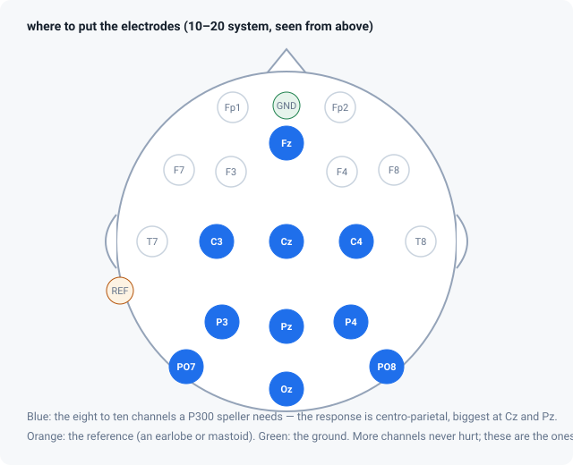
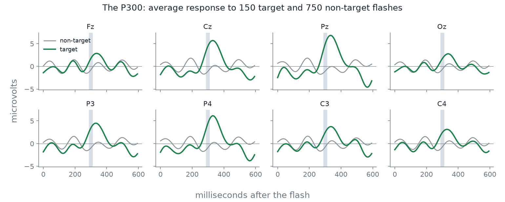
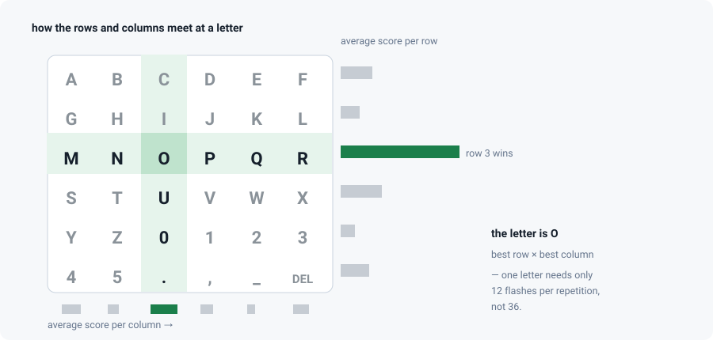
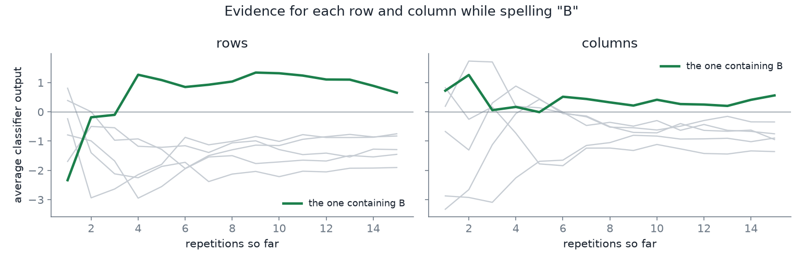
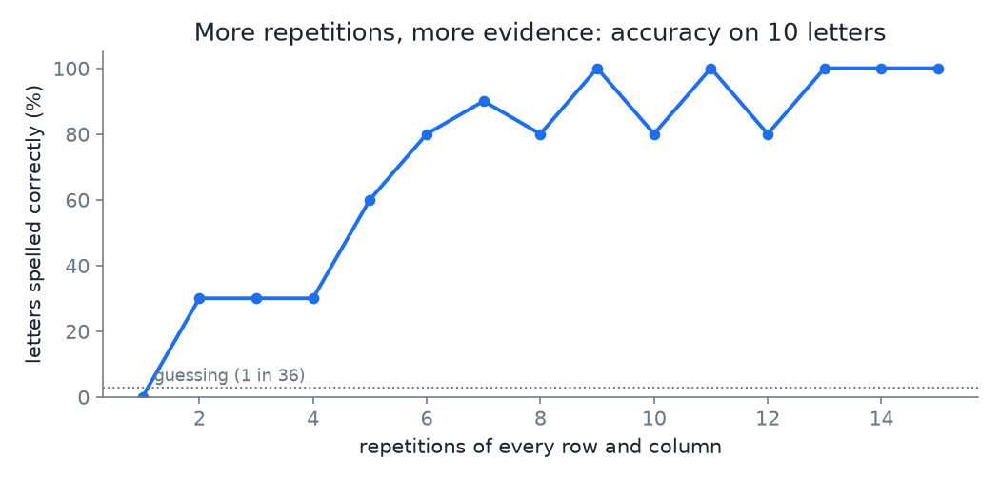
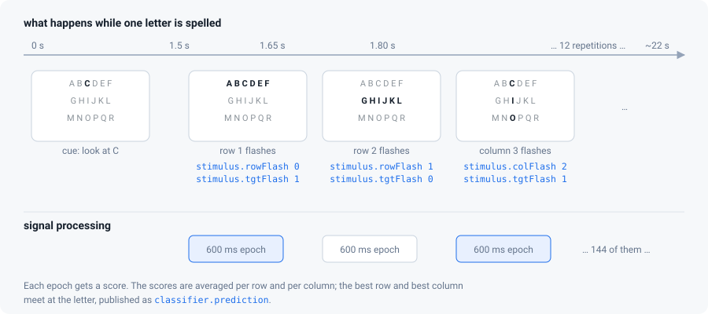
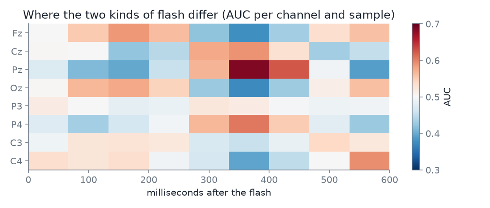

How a P300 speller works
From microvolts on the scalp to a letter on the screen — the whole idea in one page, with real data.
EEG in five minutes
Neurons signal with electricity. When many thousands of them in the same patch of cortex fire in step, the summed field is large enough to be measured at the scalp — a few microvolts (µV), a millionth of a volt, about a hundred thousand times smaller than an AA battery. That measurement is the electroencephalogram, EEG.
Practical consequences of the size of that number:
- Everything is noise until proven otherwise. Mains hum, a loose electrode, a blink, a swallow, jaw tension — all of these are much larger than the brain signal you want.
- Where you measure matters. Electrodes are placed by the international
10–20 system, which names positions by region and side:
Fzis front centre,Czthe top of the head,Pzbehind it,Ozat the back, odd numbers on the left, even on the right. - You always measure a difference. Each electrode is read against a reference (often an earlobe or mastoid), with a ground somewhere neutral. Change the reference and every waveform changes shape.

Evoked responses: finding a signal in the noise
An event-related potential (ERP) is the brain's stereotyped response to an event — a flash, a beep, a touch. A single one is invisible: a few µV of response inside 20 µV of ongoing EEG. But it is time-locked to the event and the noise is not, so if you repeat the event and average the segments that follow it, the response survives and the noise shrinks with the square root of the number of repetitions.
That segment — the data from an event to a fixed time after it — is called an epoch. Here every epoch is the 600 ms after a flash.

The P300
Around 300 milliseconds after a stimulus that is rare and relevant to what you are doing, a broad positive wave appears over the centre and back of the head. It is called the P300 (positive, 300 ms). It is not produced by the flash itself — it is produced by the flash mattering to you. A flash you are ignoring produces a much smaller response.
That is the entire trick of this BCI: you cannot move, but you can choose what to attend to, and attention is visible in the EEG.
The classic way to bring the P300 out is the oddball: a stream of frequent events with a rare one mixed in, and a task that forces the participant to notice the rare one. In a speller, the task is: silently count each time the letter you are looking at flashes.
The matrix speller
Farwell and Donchin proposed this in 1988 and it is still the standard. Lay the alphabet out in a grid. Flash whole rows and columns in random order. The participant attends to one letter. Only two of the twelve flashes in a repetition contain that letter — one row and one column — so those two produce a P300 and the other ten do not.

Because one repetition is not enough to be sure, the whole set of rows and columns is flashed several times — by default 12 repetitions, 144 flashes, about 22 seconds per letter — and the scores are averaged.


What the computer actually does

- Calibration. The participant is told which letter to attend to, so every epoch can be labelled target or non-target. A few letters gives several hundred labelled epochs.
- Training. A classifier learns the difference between the two kinds of epoch: pre-process (filter, reference, downsample), then a linear discriminant over channels × time points.
- Feedback. Now unlabelled: every flash is scored, scores are averaged per row and column, and the best row and column give the letter.

What makes it work badly
| Cause | What you see | What to do |
|---|---|---|
| Participant not really attending | Flat discriminability map, AUC near 0.5 | Re-explain the counting task; keep blocks short |
| Blinks and movement | Huge slow swings, epochs rejected | Blink in the gaps, not during flashing; support the arms |
| A bad electrode | One channel far louder than the rest | Re-gel it; the software will drop it, but you lose a channel |
| Too few repetitions | Accuracy far below the AUC would suggest | Raise --n-repetitions |
| Flashes too fast | P300 to one flash overlaps the next | Keep the inter-stimulus interval at 150 ms or more |
| Target flashed twice in quick succession | Second response is weaker (refractory) | The software already forbids it within 3 flashes |